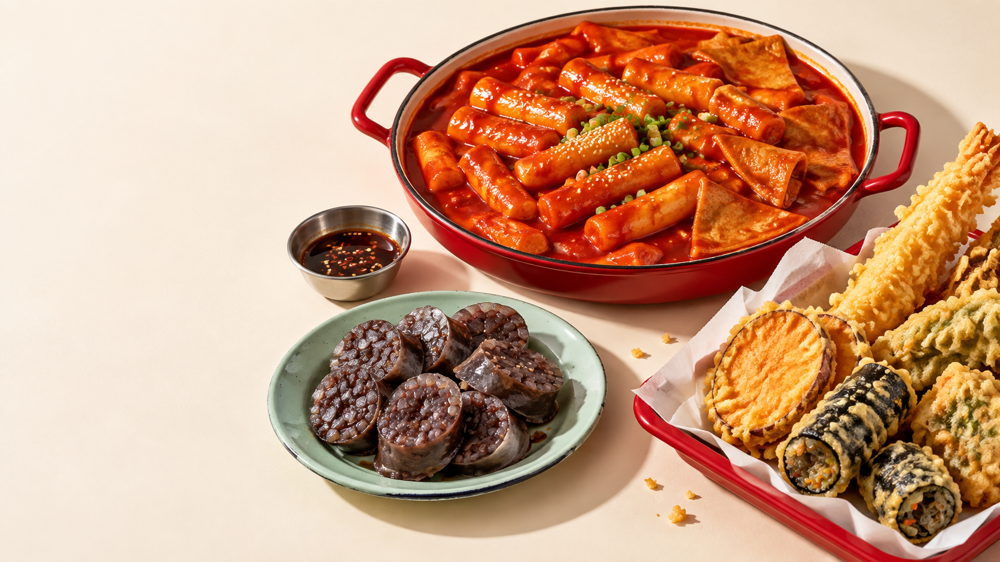

← 포트폴리오

삼총사
SAMCHONGSA
세 가지 맛. 하나의 행복.
족발 시안 보기 ↗
오늘의 행복은 한 판이면 충분해
떡. 순. 튀.
다 모였다!
매콤한 떡볶이, 쫀득한 순대, 바삭한 튀김.
좋아하는 건, 한 번에 즐겨요.
한 판 더 만나보기
↗
떡 + 순 + 튀
행복 한 판
온전한 정성을 담다.
온족
ONJOK · A TABLE WITH WARMTH
떡
순
튀
인트로 건너뛰기 ↗